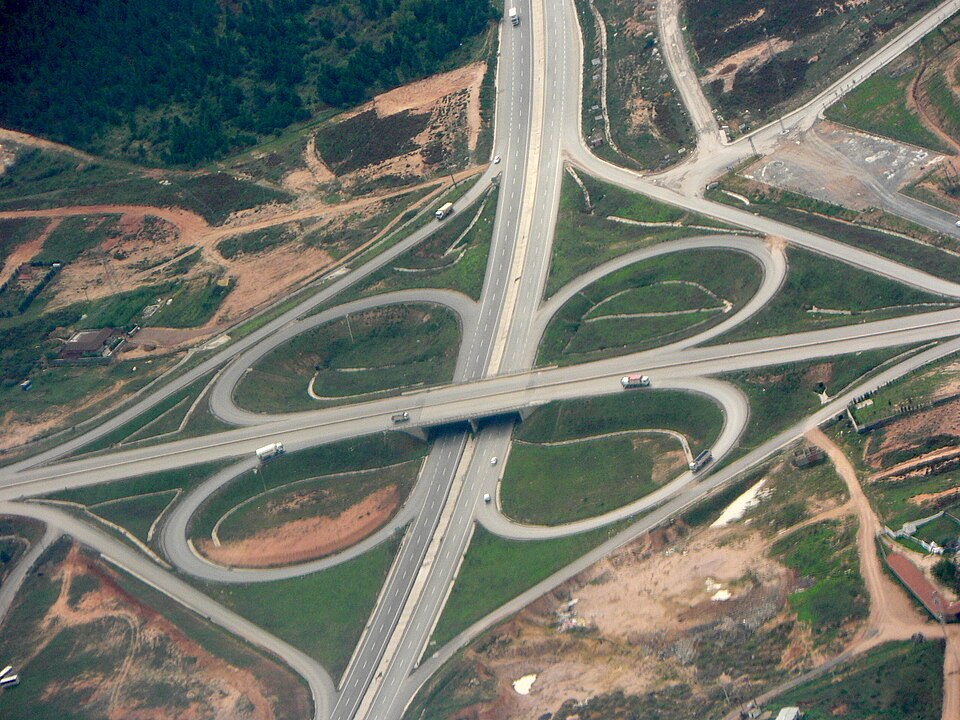

Sample Problem 2b-3
Assuming a cloverleaf interchange has a radius of curvature of 80 meters at the tightest part of the turn, what is the fastest a car could travel around this curve without experiencing more than \(0.5g\) in acceleration? Assume the car is traveling at a constant speed. If the car was instead increasing speed at a rate of \(2~\text{m/s}^2\), what would be the new overall magnitude of the acceleration experienced by the passengers?

\begin{align*}
v=19.8~\textrm{m/s}
\end{align*}
\begin{align*}
\vert\vec{a}\vert=5.297~\textrm{m/s}^2=0.54g
\end{align*}